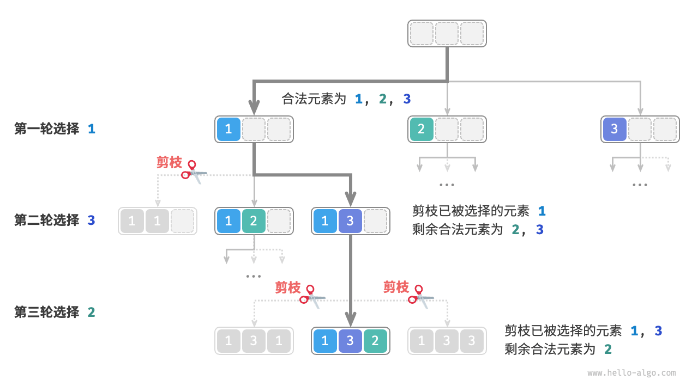
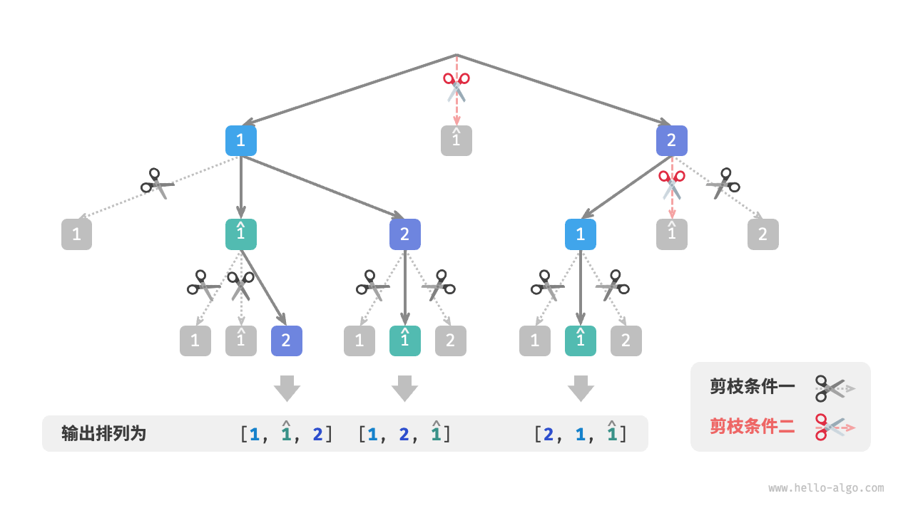

全排列问题
全排列问题是回溯算法的一个典型应用。它的定义是在给定一个集合（如一个数组或字符串）的情况下，找出其中元素的所有可能的排列。
下表列举了几个示例数据，包括输入数组和对应的所有排列。
表
| 输入数组 | 所有排列 |
|---|---|
| $[1]$ | $[1]$ |
| $[1, 2]$ | $[1, 2], [2, 1]$ |
| $[1, 2, 3]$ | $[1, 2, 3], [1, 3, 2], [2, 1, 3], [2, 3, 1], [3, 1, 2], [3, 2, 1]$ |
无相等元素的情况
!!! question
输入一个整数数组，其中不包含重复元素，返回所有可能的排列。
从回溯算法的角度看，我们可以把生成排列的过程想象成一系列选择的结果。假设输入数组为 $[1, 2, 3]$ ，如果我们先选择 $1$ ，再选择 $3$ ，最后选择 $2$ ，则获得排列 $[1, 3, 2]$ 。回退表示撤销一个选择，之后继续尝试其他选择。
从回溯代码的角度看，候选集合 choices 是输入数组中的所有元素，状态 state 是直至目前已被选择的元素。请注意，每个元素只允许被选择一次，因此 state 中的所有元素都应该是唯一的。
如下图所示，我们可以将搜索过程展开成一棵递归树，树中的每个节点代表当前状态 state 。从根节点开始，经过三轮选择后到达叶节点，每个叶节点都对应一个排列。

重复选择剪枝
为了实现每个元素只被选择一次，我们考虑引入一个布尔型数组 selected ，其中 selected[i] 表示 choices[i] 是否已被选择，并基于它实现以下剪枝操作。
- 在做出选择
choice[i]后，我们就将selected[i]赋值为 $\text{True}$ ，代表它已被选择。 - 遍历选择列表
choices时，跳过所有已被选择的节点，即剪枝。
如下图所示，假设我们第一轮选择 1 ，第二轮选择 3 ，第三轮选择 2 ，则需要在第二轮剪掉元素 1 的分支，在第三轮剪掉元素 1 和元素 3 的分支。

观察上图发现，该剪枝操作将搜索空间大小从 $O(n^n)$ 减小至 $O(n!)$ 。
代码实现
想清楚以上信息之后，我们就可以在框架代码中做“完形填空”了。为了缩短整体代码，我们不单独实现框架代码中的各个函数，而是将它们展开在 backtrack() 函数中：
- "Python"
```python
def backtrack(
state: list[int], choices: list[int], selected: list[bool], res: list[list[int]]
):
"""回溯算法：全排列 I"""
// 当状态长度等于元素数量时，记录解
if len(state) == len(choices):
// 遍历所有选择 for i, choice in enumerate(choices):res.append(list(state)) return// 剪枝：不允许重复选择元素 if not selected[i]: // 尝试：做出选择，更新状态 selected[i] = True state.append(choice) // 进行下一轮选择 backtrack(state, choices, selected, res) // 回退：撤销选择，恢复到之前的状态 selected[i] = False state.pop()
def permutations_i(nums: list[int]) -> list[list[int]]: """全排列 I""" res = [] backtrack(state=[], choices=nums, selected=[False] * len(nums), res=res) return res
- "C++"
```cpp
/* 回溯算法：全排列 I */
void backtrack(vector<int> &state, const vector<int> &choices, vector<bool> &selected, vector<vector<int>> &res) {
// 当状态长度等于元素数量时，记录解
if (state.size() == choices.size()) {
res.push_back(state);
return;
}
// 遍历所有选择
for (int i = 0; i < choices.size(); i++) {
int choice = choices[i];
// 剪枝：不允许重复选择元素
if (!selected[i]) {
// 尝试：做出选择，更新状态
selected[i] = true;
state.push_back(choice);
// 进行下一轮选择
backtrack(state, choices, selected, res);
// 回退：撤销选择，恢复到之前的状态
selected[i] = false;
state.pop_back();
}
}
}
/* 全排列 I */
vector<vector<int>> permutationsI(vector<int> nums) {
vector<int> state;
vector<bool> selected(nums.size(), false);
vector<vector<int>> res;
backtrack(state, nums, selected, res);
return res;
}
- "Java"
```java
/ 回溯算法：全排列 I /
void backtrack(List
state, int[] choices, boolean[] selected, List
} // 遍历所有选择 for (int i = 0; i < choices.length; i++) {res.add(new ArrayList<Integer>(state)); return;
} }int choice = choices[i]; // 剪枝：不允许重复选择元素 if (!selected[i]) { // 尝试：做出选择，更新状态 selected[i] = true; state.add(choice); // 进行下一轮选择 backtrack(state, choices, selected, res); // 回退：撤销选择，恢复到之前的状态 selected[i] = false; state.remove(state.size() - 1); }
/ 全排列 I /
List
## 考虑相等元素的情况
!!! question
输入一个整数数组，**数组中可能包含重复元素**，返回所有不重复的排列。
假设输入数组为 $[1, 1, 2]$ 。为了方便区分两个重复元素 $1$ ，我们将第二个 $1$ 记为 $\hat{1}$ 。
如下图所示，上述方法生成的排列有一半是重复的。

那么如何去除重复的排列呢？最直接地，考虑借助一个哈希表，直接对排列结果进行去重。然而这样做不够优雅，**因为生成重复排列的搜索分支没有必要，应当提前识别并剪枝**，这样可以进一步提升算法效率。
### 相等元素剪枝
观察下图，在第一轮中，选择 $1$ 或选择 $\hat{1}$ 是等价的，在这两个选择之下生成的所有排列都是重复的。因此应该把 $\hat{1}$ 剪枝。
同理，在第一轮选择 $2$ 之后，第二轮选择中的 $1$ 和 $\hat{1}$ 也会产生重复分支，因此也应将第二轮的 $\hat{1}$ 剪枝。
从本质上看，**我们的目标是在某一轮选择中，保证多个相等的元素仅被选择一次**。

### 代码实现
在上一题的代码的基础上，我们考虑在每一轮选择中开启一个哈希表 `duplicated` ，用于记录该轮中已经尝试过的元素，并将重复元素剪枝：
- "Python"
```python
def backtrack(
state: list[int], choices: list[int], selected: list[bool], res: list[list[int]]
):
"""回溯算法：全排列 II"""
// 当状态长度等于元素数量时，记录解
if len(state) == len(choices):
res.append(list(state))
return
// 遍历所有选择
duplicated = set[int]()
for i, choice in enumerate(choices):
// 剪枝：不允许重复选择元素 且 不允许重复选择相等元素
if not selected[i] and choice not in duplicated:
// 尝试：做出选择，更新状态
duplicated.add(choice) // 记录选择过的元素值
selected[i] = True
state.append(choice)
// 进行下一轮选择
backtrack(state, choices, selected, res)
// 回退：撤销选择，恢复到之前的状态
selected[i] = False
state.pop()
def permutations_ii(nums: list[int]) -> list[list[int]]:
"""全排列 II"""
res = []
backtrack(state=[], choices=nums, selected=[False] * len(nums), res=res)
return res
- "C++"
```cpp
/ 回溯算法：全排列 II /
void backtrack(vector
&state, const vector &choices, vector &selected, vector
} // 遍历所有选择 unordered_setres.push_back(state); return;duplicated; for (int i = 0; i < choices.size(); i++) {
} }int choice = choices[i]; // 剪枝：不允许重复选择元素 且 不允许重复选择相等元素 if (!selected[i] && duplicated.find(choice) == duplicated.end()) { // 尝试：做出选择，更新状态 duplicated.emplace(choice); // 记录选择过的元素值 selected[i] = true; state.push_back(choice); // 进行下一轮选择 backtrack(state, choices, selected, res); // 回退：撤销选择，恢复到之前的状态 selected[i] = false; state.pop_back(); }
/ 全排列 II /
vector
- "Java"
```java
/* 回溯算法：全排列 II */
void backtrack(List<Integer> state, int[] choices, boolean[] selected, List<List<Integer>> res) {
// 当状态长度等于元素数量时，记录解
if (state.size() == choices.length) {
res.add(new ArrayList<Integer>(state));
return;
}
// 遍历所有选择
Set<Integer> duplicated = new HashSet<Integer>();
for (int i = 0; i < choices.length; i++) {
int choice = choices[i];
// 剪枝：不允许重复选择元素 且 不允许重复选择相等元素
if (!selected[i] && !duplicated.contains(choice)) {
// 尝试：做出选择，更新状态
duplicated.add(choice); // 记录选择过的元素值
selected[i] = true;
state.add(choice);
// 进行下一轮选择
backtrack(state, choices, selected, res);
// 回退：撤销选择，恢复到之前的状态
selected[i] = false;
state.remove(state.size() - 1);
}
}
}
/* 全排列 II */
List<List<Integer>> permutationsII(int[] nums) {
List<List<Integer>> res = new ArrayList<List<Integer>>();
backtrack(new ArrayList<Integer>(), nums, new boolean[nums.length], res);
return res;
}
假设元素两两之间互不相同，则 $n$ 个元素共有 $n!$ 种排列（阶乘）；在记录结果时，需要复制长度为 $n$ 的列表，使用 $O(n)$ 时间。因此时间复杂度为 $O(n!n)$ 。
最大递归深度为 $n$ ，使用 $O(n)$ 栈帧空间。selected 使用 $O(n)$ 空间。同一时刻最多共有 $n$ 个 duplicated ，使用 $O(n^2)$ 空间。因此空间复杂度为 $O(n^2)$ 。
两种剪枝对比
请注意，虽然 selected 和 duplicated 都用于剪枝，但两者的目标不同。
- 重复选择剪枝：整个搜索过程中只有一个
selected。它记录的是当前状态中包含哪些元素，其作用是避免某个元素在state中重复出现。 - 相等元素剪枝：每轮选择（每个调用的
backtrack函数）都包含一个duplicated。它记录的是在本轮遍历（for循环）中哪些元素已被选择过，其作用是保证相等元素只被选择一次。
下图展示了两个剪枝条件的生效范围。注意，树中的每个节点代表一个选择，从根节点到叶节点的路径上的各个节点构成一个排列。
